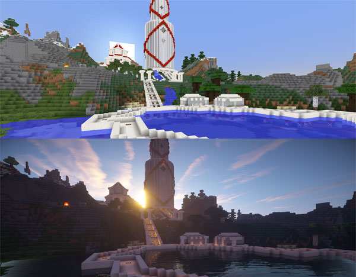
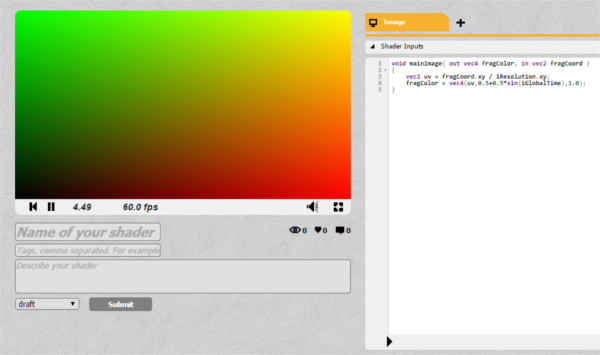
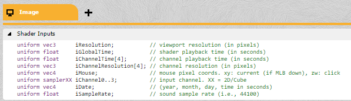
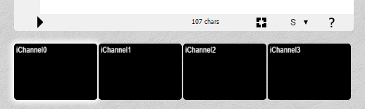
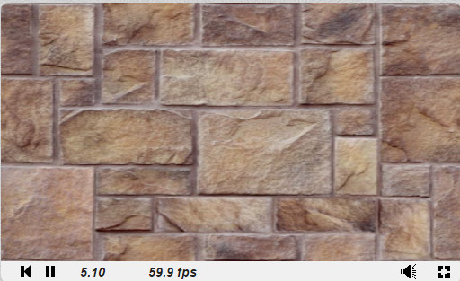
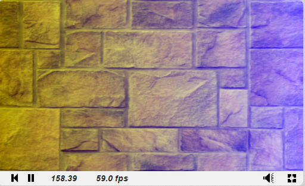
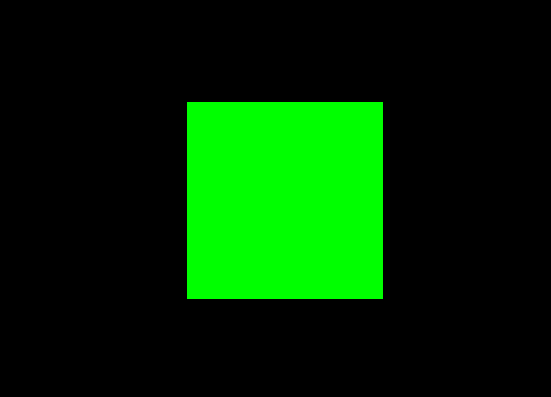
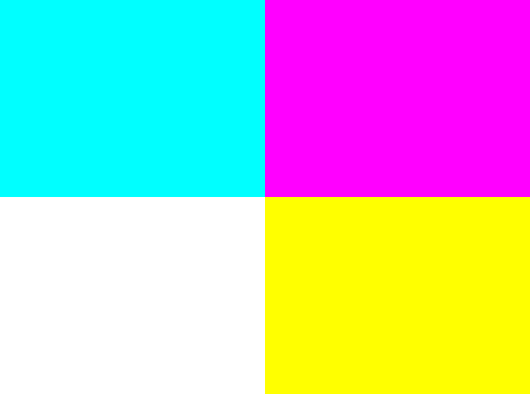
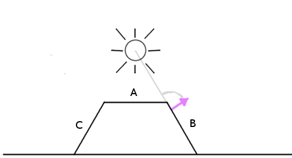

Освоить создание графических шейдеров — это значит взять под свой контроль всю мощь видепроцессора с его тысячами параллельно работающих ядер. При таком способе программирования требуется другой образ мышления, но раскрытие его потенциала стоит потраченных усилий.
Практически в любой современной графической симуляции используется код, написанный для видеопроцессора: от реалистичных эффектов освещения в высокотехнологичных AAA-играх до двухмерных эффектов постпроцессинга и симуляции жидкостей.
Например, в игре Main Craft имеется возможность вставлять самодельныей шейдеры в итоговый рендер игрового движка. Поэтому если в YouTube сделать поиск по словам "shader уроки", половина результатов будет посвящена тому, как вставлять шейдеры в Main Craft:

Сцена из Minecraft, до и после добавления нескольких шейдеров.
Задача этого туториала
Иногда программирование шейдеров представляется загадочной чёрной магией и его часто понимают неправильно. Существует множество примеров кода, демонстрирующих создание невероятных эффектов, но в которых практически нет объяснений. В своём руководстве я хочу восполнить этот пробел. Я сосредоточусь в основном на базовых принципах создания и понимания кода шейдеров, чтобы вы смогли с лёгкостью настраивать, сочетать или писать свои собственные шейдеры с нуля!
Это общее руководство, поэтому всё изученное в нём можно применять в любой технологии, использующей шейдеры.
Что же такое шейдер?
Шейдер — это просто программа, выполняемая в графическом конвейере. Она сообщает компьютеру, как рендерить каждый пиксель. Эти программы называются шейдерами («затенителями»), потому что их часто используют для управления эффектами освещения и затенения, но ничего не мешает использовать их и для других спецэффектов.
Шейдеры пишут на специальном языке шейдеров. Не волнуйтесь, вам не придётся изучать совершенно новый язык: мы будем использовать GLSL (OpenGL Shading Language), который похож на C. (Существует несколько языков написания шейдеров для разных платформ, но поскольку все они адаптированы под выполнение в видеопроцессоре, то похожи друг на друга.)
Примечание: эта статья посвящена исключительно фрагментным шейдерам (fragment shader). Если вам любопытно, какие ещё виды шейдеров бывают, то можно почитать о различных этапах графического конвейера в OpenGL Wiki.
Приступаем!
В этом туториале мы будем использовать сайт ShaderToy. Он позволяет нам начать программировать шейдеры прямо в браузере, без возни с установкой и настройкой! (Для рендеринга он использует WebGL, поэтому требуется браузер с поддержкой этой технологии.) Создавать учётную запись не обязательно, но удобно для сохранения кода.
Примечание: на момент написания статьи ShaderToy находился в состоянии беты [прим. пер.: статья написана в 2015 году]. Некоторые детали интерфейса/синтаксиса могут немного отличаться.
Нажав на New Shader, вы увидите что-то вроде этого:

Если вы не зарегистрировались, интерфейс может немного отличаться.
Маленькая чёрная стрелка внизу служит для компиляции кода.
Что происходит?
Я собираюсь описать то, как работают шейдеры, одним предложением. Приготовились? Вот оно!
Единственное предназначение шейдера — возврат четырёх чисел:r, g, b и a.
Именно это, и только это может делать шейдер. Функция выполняется для каждого пикселя на экране. Она возвращает эти четыре цветовых значения, которые становятся цветом пикселя. Это то, что называется пиксельным шейдером (иногда его называют фрагментным шейдером).
Запомнив это, давайте зальём экран сплошным красным цветом. Значения RGBA (red, green, blue и alpha, определяющая прозрачность) меняются от 0 до 1, поэтому единственное, что нужно сделать — вернуть r,g,b,a = 1,0,0,1. ShaderToy ожидает, что окончательный цвет пикселя будет храниться в fragColor.
void mainImage( out vec4 fragColor, in vec2 fragCoord )
{
fragColor = vec4(1.0,0.0,0.0,1.0);
}
Поздравляю! Вот ваш первый готовый шейдер!
Задача: Попробуйте изменить цвет на сплошной серый.
vec4 — это просто тип данных, поэтому мы могли бы объявить цвет как переменную, вот так:
void mainImage( out vec4 fragColor, in vec2 fragCoord )
{
vec4 solidRed = vec4(1.0,0.0,0.0,1.0);
fragColor = solidRed;
}
Выглядит не очень вдохновляюще. У нас есть мощь, способная выполнять код для сотен тысяч пикселей одновременно, а мы закрашиваем их одним цветом.
Давайте попробуем отрендерить на экране градиент. Мы не сможем добиться многого, не зная пары вещей о пикселях, на которые мы влияем, например, об их положении на экране…
Входные данные шейдера
Пиксельный шейдер передаёт несколько переменных, которые мы можем использовать. Самая полезная — это fragCoord, содержащая координаты X и Y пикселя (и Z, если вы работаете в 3D). Давайте попробуем превратить все пиксели в левой части экрана в чёрные, а все пиксели справа — в красные:
void mainImage( out vec4 fragColor, in vec2 fragCoord )
{
vec2 xy = fragCoord.xy; //Получаем координаты текущего пикселя
vec4 solidRed = vec4(0,0.0,0.0,1.0);//Теперь он стал чёрным
if(xy.x > 300.0){//Произвольное число, мы не знаем размер экрана!
solidRed.r = 1.0;//Присваиваем красному компоненту значение 1.0
}
fragColor = solidRed;
}
Примечание: Получить доступ к компонентам любого vec4 можно с помощью obj.x, obj.y, obj.z и obj.w или с помощью obj.r, obj.g, obj.b, obj.a. Они эквивалентны, это просто удобный способ наименования, упрощающий чтение кода, потому что когда люди видят obj.r, то понимают, что obj представляет собой цвет.
Вы заметили проблему в приведённом выше коде? Попробуйте нажать на кнопку go fullscreen в правом нижнем углу окна предварительного просмотра.
Размеры красной части экрана будут разными и зависят от размера экрана. Чтобы закрасить красным ровно половину экрана, нам нужно знать его размер. Размер экрана не является встроенной переменной, как позиция пикселя, потому что обычно он выбирается программистом, создающим приложение. В нашем случае размер экрана устанавливают разработчики ShaderToy.
Если что-то не является встроенной переменной, то можно отправить эту информацию из центрального процессора (из основной программы) в видеопроцессор (в ваш шейдер). ShaderToy берёт эту задачу на себя. Все передаваемые шейдеру переменные указаны во вкладке Shader Inputs. Переменные, передаваемые таким образом из ЦП в видеопроцессор, называются в GLSL uniform (глобальными).

Давайте изменим код, чтобы правильно определять центр экрана. Нам нужно использовать входные данные шейдера iResolution:
void mainImage( out vec4 fragColor, in vec2 fragCoord )
{
vec2 xy = fragCoord.xy; //Получаем координаты текущего пикселя
xy.x = xy.x / iResolution.x; //Делим координаты на размер экрана
xy.y = xy.y / iResolution.y;
// Теперь x для самого левого пикселя равен 0, а для самого правого равен 1
vec4 solidRed = vec4(0,0.0,0.0,1.0); //Теперь он стал чёрным
if(xy.x > 0.5){
solidRed.r = 1.0; //Присваиваем красному компоненту значение 1.0
}
fragColor = solidRed;
}
Если попробовать теперь изменить размер окна предварительного просмотра, то цвета должны точно разделить экран пополам.
От разделения к градиенту
Превратить это в градиент будет довольно просто. Значения цветов изменяются от 0 до 1, и координаты тоже изменяются от 0 до 1.
void mainImage( out vec4 fragColor, in vec2 fragCoord )
{
vec2 xy = fragCoord.xy; //Получаем координаты текущего пикселя
xy.x = xy.x / iResolution.x; //Делим координаты на размер экрана
xy.y = xy.y / iResolution.y;
// Теперь x для самого левого пикселя равен 0, а для самого правого равен 1
vec4 solidRed = vec4(0,0.0,0.0,1.0); //Теперь он стал чёрным
solidRed.r = xy.x; //Присваиваем красному компоненту нормализованное значение x
fragColor = solidRed;
}
Вуаля!
Задача: Можете превратить эту картинку в вертикальный градиент? А как насчёт диагонального? Как насчёт градиента из нескольких цветов?
Если вы поэкспериментируете с кодом, то заметите, что верхний левый угол имеет координаты (0,1), а не (0,0). Это важно запомнить.
Отрисовка изображений
Экспериментировать с цветами интересно, но если мы хотим сделать что-то впечатляющее, то наш шейдер должен научиться получать в качестве входных данных изображение и изменять его. Таким образом можно получить шейдер, воздействующий на весь игровой экран (например, «подводный» эффект или цветокоррекцию), или воздействовать нужным способом только на определённые объекты (например, для создания реалистичной системы освещения).
Если бы мы программировали на обычной платформе, то нужно было бы передавать видеопроцессору изображение (или текстуру) как uniform, точно так же, как мы бы передавали разрешение экрана. ShaderToy позаботится об этом за нас. В нижней части экрана есть четыре входных канала:

Четыре входных канала ShaderToy
Нажмите на iChannel0 и выберите любую текстуру (изображение).
В результате у вас будет изображение, передаваемое шейдеру. Однако есть одна проблема: отсутствие функции DrawImage(). Не забывайте, единственное, что может делать пиксельный шейдер — менять цвет каждого пикселя.
Если мы можем только возвращать цвет, то как можно нарисовать текстуру на экране? Нам нужно каким-то образом привязать текущий пиксель шейдера к соответствующему пикселю текстуры:
В зависимости от расположения (0,0) на экране может потребоваться отразить ось Y для правильной привязки текстуры. На момент написания статьи ShaderToy был обновлён и исходная точка находится в левом верхнем углу, так что ничего отражать не требуется.
Мы можем выполнить привязку с помощью функции texture(textureData,coordinates), получающей на входе данные текстуры и пару координат (x, y), возвращающую как vec4 цвет текстуры в этих координатах.
Вы можете привязывать координаты к экрану как вам угодно. Можно отрисовать всю текстуру на четверти экрана (пропуская пиксели, то есть уменьшив её масштаб) или просто отрисовать часть текстуры.
Мы хотим только увидеть изображение, поэтому пиксели будут совпадать в масштабе 1:1:
void mainImage( out vec4 fragColor, in vec2 fragCoord )
{
vec2 xy = fragCoord.xy / iResolution.xy;//Соединяем это в одну строку
vec4 texColor = texture(iChannel0,xy);//Получаем от iChannel0 пиксель в координате xy
fragColor = texColor;//Присваиваем экранному пикселю этот цвет
}
Так мы получили своё первое изображение!

Теперь, научившись правильно получать данные из текстуры, мы можем делать с ними всё, что угодно! Мы можем растягивать или масштабировать их, экспериментировать с цветами.
Давайте попробуем наложить на изображение градиент, похожий на то, что мы делали раньше:
texColor.b = xy.x;

Поздравляю, вы только что написали свой первый эффект постпроцессинга!
Задача: Сможете написать шейдер, делающий изображение чёрно-белым?
Учтите, что хотя мы и выбрали статичное изображение, всё, что вы видите, выполняется в реальном времени. Чтобы убедиться в этом, замените статичное изображение на видео: нажмите на iChannel0 и выберите любое видео.
Добавляем движение
Пока что все наши эффекты были статичными. Мы можем делать гораздо более интересные вещи, воспользовавшись входными данными, предоставляемыми ShaderToy. iGlobalTime — это постоянно увеличивающаяся переменная. Мы можем использовать её как начальное число для создания периодических эффектов. Давайте попробуем немного поиграть с цветами:
void mainImage( out vec4 fragColor, in vec2 fragCoord )
{
vec2 xy = fragCoord.xy / iResolution.xy; // Соединяем это в одну строку
vec4 texColor = texture(iChannel0,xy); // Получаем от iChannel0 пиксель в координате xy
texColor.r *= abs(sin(iGlobalTime));
texColor.g *= abs(cos(iGlobalTime));
texColor.b *= abs(sin(iGlobalTime) * cos(iGlobalTime));
fragColor = texColor; // Присваиваем экранному пикселю этот цвет
}
В GLSL встроены функции синуса и косинуса, а также множество других полезных функций, например, получение длины вектора или расстояния между двумя векторами. Значения цветов не могут быть отрицательными, поэтому нужно получить абсолютное значение с помощью функции abs.
Задача: Можете ли вы сделать шейдер, меняющий изображение с чёрно-белого на цветное и обратно?
Примечание об отладке шейдеров
При отладке кода можно выполнять его пошагово или выводить на печать значения, но при написании шейдеров это невозможно. Можете поискать инструменты отладки для своей платформы, но в общем случае лучше всего привязать проверяемое значение к какой-то графической информации, которую можно увидеть.
Подводим итог
Это только самые основы работы с шейдерами, но освоившись с ними, вы сможете добиться гораздо большего. Посмотрите эффекты ShaderToy и проверьте, сможете ли вы понять или воспроизвести их!
В этом туториале я не упоминал вершинные шейдеры (Vertex Shaders). Они пишутся на том же языке, но выполняются для каждой вершины, а не пикселя, и возвращают вместе с цветом ещё и положение. Вершинные шейдеры обычно проецируют 3D-сцену на экран (эта функция встроена в большинство графических конвейеров). Пиксельные шейдеры обеспечивают большинство наблюдаемых на экране сложных эффектов, поэтому я рассматриваю их.
Ещё одна задача: Сможете ли вы написать шейдер, удаляющий зелёный цвет из видео с ShaderToy и добавляющий другое видео в качестве фона первого видео?
ShaderToy, с которым мы работали ранее, отлично подходит для быстрой проверки и экспериментов, но его возможности довольно ограничены. Например, вы не можете контролировать данные, передаваемые шейдеру. Если у нас будет собственная среда для запуска шейдеров, то мы сможем создавать всевозможные интересные эффекты и использовать их в собственных проектах! Для запуска шейдеров в браузере мы будем использовать в качестве фреймворка Three.js. WebGL — это Javascript API, позволяющий рендерить шейдеры, Three.js нужен только для упрощения работы.
Если вам не интересны JavaScript или веб-платформа, не волнуйтесь, мы не будем вдаваться в особенности веб-рендеринга (но если вы хотите узнать о фреймворке больше, то изучите этот туториал). Настройка шейдеров в браузере — самый быстрый способ начать работу, но освоившись с этим процессом, вы сможете с лёгкостью настраивать и использовать шейдеры на любой платформе.
Настройка
В этом разделе мы рассмотрим локальную настройку шейдеров. Вы можете повторять за мной без необходимости скачивать что-то благодаря этому встроенному виджету CodePen:
Можете создать форк и отредактировать проект на CodePen.
Hello Three.js!
Three.js — это JavaScript-фреймворк, который берёт на себя большую часть boilerplate-кода для WebGL, необходимого для рендеринга шейдеров. Проще всего начать с использования версии, выложенной на CDN.
Можете скачать файл HTML, который является простой сценой Threejs.
Сохраните файл на диск и откройте его в браузере. Вы должны увидеть чёрный экран. Пока не очень интересно, так что давайте попробуем добавить куб, просто чтобы проверить, что всё работает.
Для создания куба нам нужно определить его геометрию и материал, а затем добавить его в сцену. Добавьте этот фрагмент кода в поле Add your code here:
var geometry = new THREE.BoxGeometry( 1, 1, 1 );
var material = new THREE.MeshBasicMaterial( { color: 0x00ff00} );// Сделаем его зелёным
var cube = new THREE.Mesh( geometry, material );
// Добавляем куб на экран
scene.add( cube );
cube.position.z = -3;// Сдвигаем куб назад, чтобы его было видно
Мы не будем подробно рассматривать куб, потому что нам больше интересен шейдер. Но если всё сделано верно, то вы увидите в центре экрана зелёный куб:

Пока мы здесь, давайте заставим его вращаться. Функция render выполняется каждый кадр. Получить доступ к повороту куба можно через cube.rotation.x (или .y, или .z). Попробуйте увеличить значение, чтобы функция рендеринга выглядела так:
function render() {
cube.rotation.y += 0.02;
requestAnimationFrame( render );
renderer.render( scene, camera );
}
Задача: Сможете повращать куб по другой оси? А как насчёт двух осей одновременно?
Итак, всё готово, пора добавить шейдеры!
Добавляем шейдеры
На этом этапе мы можем начать думать о процессе реализации шейдеров. Скорее всего, похожая ситуация будет у вас вне зависимости от платформы: всё настроено, на экране отрисовываются объекты, так как теперь получить доступ к видеопроцессору?
Шаг 1: загрузка кода GLSL
Для создания сцены мы используем JavaScript. В других ситуациях может использоваться C++, Lua или любой другой язык. Вне зависимости от этого шейдеры пишутся на специальном языке шейдеров. Язык шейдеров OpenGL называется GLSL (OpenGL Shading Language). Поскольку мы используем WebGL, основанный на OpenGL, то будем писать на GLSL.
Как и где пишется код GLSL? Основное правило: код GLSL загружается в качестве строки. Затем её можно передать для парсинга и выполнения в видеопроцессоре.
В JavaScript это можно сделать простой передачей кода внутри переменной, вот так:
var shaderCode = "Здесь код шейдера;"
Это сработает, но поскольку в JavaScript нет простых способов создания многострочных строк, это для нас не очень удобно. Большинство программистов пишет код шейдеров в текстовых файлах и даёт им расширение .glsl или .frag (сокращение от fragment shader), а затем просто загружает файл.
Это возможно, но мы в этом туториале мы будем писать код шейдеров внутри нового тега <script> и загружать его в JavaScript оттуда, чтобы весь код находился в одном файле.
Создадим новый тег <script> в HTML, который выглядит вот так:
<script id="fragShader" type="shader-code">;
</script>
Мы присвоим ему ID fragShader, чтобы позже можно было получить к нему доступ. Тип shader-code — это на самом деле несуществующий, выдуманный тип скрипта. (Можно выбрать для него любое другое имя). Мы делаем так затем, чтобы код не выполнялся и не отображался в HTML.
Теперь давайте вставим очень простой шейдер, возвращающий белый цвет.
<script id="fragShader" type="shader-code">
void main() {
gl_FragColor = vec4(1.0,1.0,1.0,1.0);
}
</script>
(Компоненты vec4 в этом случае соответствуют значению RGBA, ка объяснялось в начале туториала.)
Теперь нам нужно загрузить этот код. Мы сделаем это простой строкой на JavaScript, находящей HTML-элемент и получающей внутренний текст:
var shaderCode = document.getElementById("fragShader").innerHTML;
Он должен находится под кодом куба.
Не забывайте: только загруженный как строка код будет парситься как действительный код GLSL (то есть void main() {...}. Остальное — это просто boilerplate HTML.)
Можете создать форк и отредактировать проект на CodePen.
Шаг 2: применение шейдера
Способы применения шейдера могут отличаться, они зависят от используемой платформы и её интерфейса с видеопроцессором. С этим никогда не возникает трудностей, и быстрым поиском можно выяснить, как создать объект и применить к нему шейдеры с помощью Three.js.
Нам нужно создать специальный материал и передать его коду шейдера. В качестве объекта шейдера мы создадим плоскость (но можем использовать и куб). Вот что нужно сделать:
// Создаём объект, к которому нужно применить шейдер
var material = new THREE.ShaderMaterial({fragmentShader:shaderCode})
var geometry = new THREE.PlaneGeometry( 10, 10 );
var sprite = new THREE.Mesh( geometry,material );
scene.add( sprite );
sprite.position.z = -1;// Перемещаем его назад, чтобы его было видно
На этом этапе вы должны видеть белый экран:
Можете создать форк и отредактировать проект на CodePen.
Если заменить цвет в коде шейдера на любой другой и обновить страницу, то вы увидите новый цвет.
Задача: Сможете ли вы сделать одну часть экрана красной, а другую синей? (Если не получится, то на следующем шаге я дам подсказку!)
Шаг 3: передача данных
На этот момент мы уже можем делать с шейдером всё, что угодно, но пока не знаем, что можно сделать. У нас есть только встроенная возможность определения положения пикселя gl_FragCoord и, если вы помните, это положение нормализовано. Нам как минимум нужно знать размеры экрана.
Для передачи данных шейдеру нам нужно отправить то, что мы назвали uniform-переменной. Для этого мы создаём объект uniforms и добавляем к нему наши переменные. Вот синтаксис передачи разрешения экрана:
var uniforms = {};
uniforms.resolution = {type:'v2',value:new THREE.Vector2(window.innerWidth,window.innerHeight)};
Каждая uniform-переменная дожна иметь тип и значение. В данном случае это двухмерный вектор, координатами которого являются ширина и высота окна. В таблице ниже (взятой из документации Three.js) представлены все типы данных, которые можно отправлять, вместе с их идентификаторами:
|
Строка типа Uniform |
Тип GLSL |
Тип JavaScript |
|
'i', '1i' |
int |
Number |
|
'f', '1f' |
float |
Number |
|
'v2' |
vec2 |
THREE.Vector2 |
|
'v3' |
vec3 |
THREE.Vector3 |
|
'c' |
vec3 |
THREE.Color |
|
'v4' |
vec4 |
THREE.Vector4 |
|
'm3' |
mat3 |
THREE.Matrix3 |
|
'm4' |
mat4 |
THREE.Matrix4 |
|
't' |
sampler2D |
THREE.Texture |
|
't' |
samplerCube |
THREE.CubeTexture |
Чтобы отправить его шейдеру, изменим формирователь экземпляров ShaderMaterial, добавив туда вектор:
var material = new THREE.ShaderMaterial({uniforms:uniforms,fragmentShader:shaderCode})
Мы ещё не закончили! Теперь, когда шейдер получает эту переменную, нам нужно с ней что-то сделать. Давайте создадим градиент, как мы делали это раньше: нормализовав координату и используя её для создания значения цвета.
Изменим код шейдера следующим образом:
uniform vec2 resolution;// Здесь сначала должны быть объявлены uniform-переменные
void main() {
// Теперь можно нормализовать координату
vec2 pos = gl_FragCoord.xy / resolution.xy;
// И создать градиент!
gl_FragColor = vec4(1.0,pos.x,pos.y,1.0);
}
В результате у нас получится красивый градиент!
Можете создать форк и отредактировать проект на CodePen.
Задача: Попробуйте разделить экран на четыре равных части разных цветов. Примерно вот так:

Шаг 4: обновление данных
Хорошо, что мы научились отправлять данные в шейдер, но что если нам нужно их обновить? Например, если открыть предыдущий пример в новой вкладке, а потом изменить размер окна, то градиент не обновится, потому что использует прежние размеры экрана.
Для обновления переменных обычно просто заново отправляют uniform-переменную. Однако в Three.js достаточно просто обновить объект uniforms в функции render, повторно отправлять данные шейдеру не требуется.
Вот как выглядит функция рендеринга после внесения изменений:
function render() {
cube.rotation.y += 0.02;
uniforms.resolution.value.x = window.innerWidth;
uniforms.resolution.value.y = window.innerHeight;
requestAnimationFrame( render );
renderer.render( scene, camera );
}
Если открыть новый CodePen и изменить размер окна, то вы увидите, как изменяются цвета, несмотря на то, что изначальный размер окна просмотра остался тем же). Проще всего это заметить, посмотрев на цвета в углах и убедившись, что они не меняются.
Примечание: Отправка данных в видеопроцессор обычно является затратной задачей. Отправка нескольких переменных за один кадр вполне нормальна, но при передаче сотен переменных за кадр частота смены кадров значительно снизится. Кажется, что такое маловероятно, но если на экране есть несколько сотен объектов, и ко всем ним применено освещение с разными свойствами, то всё быстро выходит из под контроля. Позже мы узнаем про оптимизацию шейдеров.
Задача: Попробуйте постепенно изменять цвета.
Шаг 5: работа с текстурами
Вне зависимости от способа загрузки и формата текстур на всех платформах они передаются в шейдер как uniform-переменные.
Небольшое примечание о загрузке файлов в JavaScript: можно без проблем загружать изображения с внешнего URL (именно так мы и будем делать). Однако если вы захотите загрузить изображение локально, то возникнут проблемы с разрешениями, потому что JavaScript обычно не может и не должен иметь доступа к файлам в системе. Простейший способ решения — запустить локальный Python-сервер, что на самом деле проще, чем кажется.
В Three.js есть небольшая удобная функция для загрузки изображения как текстуры:
THREE.ImageUtils.crossOrigin = '';// Позволяет загружать внешнее изображение
var tex = THREE.ImageUtils.loadTexture( "https://tutsplus.github.io/Beginners-Guide-to-Shaders/Part2/SIPI_Jelly_Beans.jpg" );
Первая строка задаётся только один раз. В неё можно вставить любой URL изображения.
Затем нам нужно добавить текстуру к объекту uniforms.
uniforms.texture = {type:'t',value:tex};
И, наконец, нам нужно объявить uniform-переменную в коде шейдера, а потом отрисовать её тем же способом, как мы делали ранее — с помощью функции texture2D:
uniform vec2 resolution;
uniform sampler2D texture;
void main() {
vec2 pos = gl_FragCoord.xy / resolution.xy;
gl_FragColor = texture2D(texture,pos);
}
На экране должно появиться растянутое изображение конфет:
(Это изображение является стандартным тестовым изображением в компьютерной графике, оно взято у Института обработки сигналов и изображений (SIPI) (поэтому на нём показана аббревиатура IPI) Университета Южной Калифорнии. Думаю, оно нам подходит, ведь мы как раз изучаем графические шейдеры!)
Задача: Попробуйте постепенно менять цвета текстуры с полного цвета на градации серого.
Дополнительный шаг: применяем шейдеры к другим объектам
В созданной нами плоскости нет ничего особенного. Мы могли применить шейдер и к кубу. На самом деле можно просто заменить строку с геометрией плоскости:
var geometry = new THREE.PlaneGeometry( 10, 10 );
на:
var geometry = new THREE.BoxGeometry( 1, 1, 1 );
Вуаля, конфеты нарисованы на кубе:
Вы можете возразить: «Постойте, но ведь это не похоже на правильную проекцию текстуры на куб!» Вы правы: если посмотреть на шейдер, то видно, что мы на самом деле говорим ему «размести все пиксели этого изображения на экране». То, что они находятся на кубе, просто означает, что все пиксели за его пределами отбрасываются.
Если бы мы хотели применить текстуру так, чтобы она выглядела физически нарисованной на кубе, то наша работа напоминала бы изобретение заново 3D-движка (что было бы довольно глупо, учитывая, что мы уже используем 3D-движок и мы можем просто попросить его отрисовать текстуру отдельно на каждой стороне). В этом туториале мы используем шейдеры для того, что иначе достичь было бы невозможно, так что мы не будем вдаваться в такие подробности. (Если вы жаждете узнать больше, на Udacity есть отличный курс по основам 3D-графики!)
Следующие шаги
На этом этапе мы уже можем делать всё, что сделали в ShaderToy, однако теперь мы способны использовать любые текстуры и любые объекты, на любой платформе.
Имея всю эту свободу, мы можем сделать что-нибудь вроде системы освещения, с реалистичными тенями и источниками света. Этим мы ниже и займёмся. Кроме того, я расскажу о техниках оптимизации шейдеров.
Освоившись с основами шейдеров мы на практике применим мощь видеопроцессора для создания реалистичного динамического освещения.
Начиная с этого момента мы будем рассматривать общие концепции графических шейдеров без привязки к конкретной платформе. (Для удобства во всех примерах кода по-прежнему будет использоваться JavaScript/WebGL.)
Для начала найдите подходящий вам способ выполнения шейдеров. (JavaScript/WebGL — это простейший способ, но я рекомендую вам поэкспериментировать со своей любимой платформой!)
Цели
К концу этого туториала вы не только начнёте хорошо ориентироваться в системах освещения, но и с нуля создадите собственную.
Вот как будет выглядеть конечный результат (нажмите мышью для включения света):
Многие игровые движки имеют уже готовые системы освещения, но понимание того, как они сделаны и как создавать собственные, даёт вам больше возможностей придать игре соответствующий ей уникальный вид. Кроме того, шейдерные эффекты не обязательно должны быть только «косметическими», они открывают двери потрясающим новым игровым механикам!
Отличным примером этого является Chroma. Игрок может бегать по динамическим теням, создаваемым в реальном времени:
Приступаем к работе: наша исходная сцена
Мы многое пропустим в первоначальной настройке, потому что она подробно рассмотрена выше. Начнём с простого фрагментного шейдера, рендерящего нашу текстуру:
Здесь не происходит ничего сложного. Код на JavaScript задаёт сцену и отправляет шейдеру текстуру для рендеринга и размеры экрана.
var uniforms = {
tex : {type:'t',value:texture},// Текстура
res : {type: 'v2',value:new THREE.Vector2(window.innerWidth,window.innerHeight)}// Хранит разрешение
}
В коде на GLSL мы объявляем и используем эти uniform-переменные:
uniform sampler2D tex;
uniform vec2 res;
void main() {
vec2 pixel = gl_FragCoord.xy / res.xy;
vec4 color = texture2D(tex,pixel);
gl_FragColor = color;
}
Прежде чем использовать координаты пикслей для отрисовки текстуры, мы их нормализуем.
Просто чтобы убедиться, что вы всё понимаете, вот вам небольшое задание на разогрев:
Задача: Отрендерите текстуру, не изменяя соотношения её сторон (Попробуйте сделать это самостоятельно, мы рассмотрим решение ниже.)
Довольно очевидно, почему текстура растянута, но если это непонятно, то вот подсказка: посмотрите на строку, в которой мы нормализуем координаты:
vec2 pixel = gl_FragCoord.xy / res.xy;
Мы делим vec2 на vec2, что аналогично делению каждого отдельного компонента. Другими словами, написанное выше эквивалентно следующему:
vec2 pixel = vec2(0.0,0.0);
pixel.x = gl_FragCoord.x / res.x;
pixel.y = gl_FragCoord.y / res.y;
Мы делим x и y на разные числа (на ширину и высоту экрана). Естественно, что изображение будет растянутым.
Что произойдёт, если мы разделим x и y gl_FragCoord только на x res? Или только на y?
Ради простоты дальше в туториале мы оставим нормализованный код таким же, то неплохо бы разобраться, что здесь происходит.
Шаг 1: добавление источника света
Прежде чем создать что-то интересное, нам нужен источник света. «Источник света» — это просто точка, передаваемая шейдеру. Для этой точки мы создадим новую uniform:
var uniforms = {
//Добавляем переменную источника света
light: {type:'v3', value:new THREE.Vector3()},
tex : {type:'t',value:texture},// Текстура
res : {type: 'v2',value:new THREE.Vector2(window.innerWidth,window.innerHeight)}// Хранит разрешение
}
Мы создали вектор с тремя измерениями, потому что мы хотим использовать x и y в качестве положения источника на экране, а z — в качестве радиуса.
Давайте присвоим в JavaScript значения нашему источнику света:
uniforms.light.value.z = 0.2;// Радиус
Мы будем использовать радиус как процент от размеров экрана, поэтому 0.2 будет составлять 20% экрана. (В этом выборе нет ничего особенного. Мы могли бы задать размер в пикселях. Это число ничего не значит, пока мы не начнём с ним делать что-нибудь в коде GLSL.)
Чтобы получить положение мыши, нужно просто добавить получатель события (event listener):
document.onmousemove = function(event){
// Обновляем источник света, чтобы он следовал за мышью
uniforms.light.value.x = event.clientX;
uniforms.light.value.y = event.clientY;
}
Давайте теперь напишем код шейдера, чтобы воспользоваться этой координатой источника света. Начнём с простой задачи: сделаем так, чтобы каждый пиксель в пределах радиуса источника света был видимым, а остальные были чёрными.
На GLSL это может выглядеть примерно так:
uniform sampler2D tex;
uniform vec2 res;
uniform vec3 light;// Не забывайте объявлять здесь uniform!
void main() {
vec2 pixel = gl_FragCoord.xy / res.xy;
vec4 color = texture2D(tex,pixel);
// Расстояние от текущего пикселя до источника света
float dist = distance(gl_FragCoord.xy,light.xy);
if(light.z * res.x > dist){// Проверяем, находится ли пиксель внутри радиуса
gl_FragColor = color;
} else {
gl_FragColor = vec4(0.0);
}
}
Здесь мы сделали следующее:
Ой-ёй! Источник света следует за мышью как-то странно.
Задача: Сможете это исправить? (Попробуйте снова разобраться самостоятельно, прежде чем мы решим эту задачу ниже.)
Исправление движения источника света
Возможно, вы помните, что ось Y здесь перевёрнута. Вы можете поторопиться просто ввести:
light.y = res.y - light.y;
Это математически верно, но если поступить так, то шейдер не скомпилируется! Проблема в том, что uniform-переменные невозмжоно изменять. Чтобы понять, почему, нужно помнить, что этот код выполняется для каждого отдельного пикселя параллельно. Представьте, что все процессорные ядра попытаются изменить единственную переменную одновременно. Плохая ситуация!
Мы можем исправить ошибку, создав новую переменную вместо uniform. Или ещё лучше — мы можем просто сделать этот шаг до передачи данных в шейдер:
uniforms.light.value.y = window.innerHeight - event.clientY;
Теперь мы успешно определили видимый радиус нашей сцены. Однако он выглядит слишком резким…
Добавление градиента
Вместо простой обрезки до чёрного цвета за пределами радиуса давайте попробуем создать плавный градиент у краёв. Можно сделать это с помощью расстояния, которое мы уже вычисляем.
Вместо присвоения всем пикселям в пределах радиуса цвета текстуры:
gl_FragColor = color;
мы можем умножать его на коэффициент расстояния:
gl_FragColor = color * (1.0 - dist/(light.z * res.x));
Это сработает, потому что dist — это расстояние в пикселях между текущим пикселем и источником света. (light.z * res.x) — это длина радиуса. Поэтому когда мы смотрим на пиксель ровно под источником света, dist равно 0, то есть мы умножаем color на 1 и получаем полный цвет.

На этом рисунке dist вычисляется для произвольного пикселя. dist меняется в зависимости от того, в каком пикселе мы находимся, а значение light.z * res.x постоянно.
Если мы посмотрим на пиксель на границе круга, то dist равно длине радиуса, то есть в результате мы умножаем color на 0 и получаем чёрный цвет.
Шаг 2: добавляем глубину
Пока мы не сделали ничего особенного, просто добавили нашей текстуре градиентную маску. Всё по-прежнему выглядит плоским. Чтобы понять, как это исправить, давайте посмотрим, что сейчас делает система освещения, и сравним с тем, что она должна делать.

В представленном выше случае стоит ожидать, что точка A будет освещена сильнее всего, потому что источник света находится прямо над ней, а B и C будут темнее, потому что на боковых сторонах практически нет лучей.
Однако вот что видит наша система освещения сейчас:

Все точки обрабатываются одинаково, потому что единственный фактор, который учитывает система — это расстояние на плоскости xy. Вы можете подумать, что нам всего лишь нужна высота каждой их этих точке, но это не совсем так. Чтобы понять, почему, рассмотрите этот рисунок:

A находится наверху фигуры, а B и C — по бокам. D — это ещё одна точка на земле. Мы видим, что A и D должны быть самыми яркими, причём D немного темнее, потому что свет достигает её под углом. С другой стороны, B и C должны быть очень тёмными, потому что до них почти не доходит свет, ведь они направлены от источника света.
Не так важна высота, как направление, в котором повёрнута поверхность. Оно называется нормалью поверхности.
Но как передать эту информацию шейдеру? Мы ведь наверно не можем передавать огромный массив из тысяч чисел для каждого отдельного пикселя? На самом деле, мы так и делаем! Только мы называем это не массивом, а текстурой.
Именно это делает карта нормалей: она просто является изображением, в котором значения r, g и b каждого пикселя представляют не цвет, а направление.

На рисунке выше показана простая карта нормалей. Если воспользоваться инструментом «пипетка» мы увидим, что направление по умолчанию («плоское») представлено цветом (0.5, 0.5, 1) (синий цвет, занимающий бо́льшую часть изображения). Это направление, указывающее прямо вверх. Значения x, y и z присваиваются значениям r, g и b.
Наклонная сторона справа повёрнута вправо, поэтому её значение x выше. Значение x также является значением красного, именно поэтому сторона выглядит немного красноватой или розоватой. То же самое относится ко всем остальным сторонам.
Карта выглядит забавно, потому что не предназначена для рендеринга, она просто кодирует значения нормалей этих поверхностей.
Давайте загрузим эту простую карту нормалей для теста:
var normalURL = "https://raw.githubusercontent.com/tutsplus/Beginners-Guide-to-Shaders/master/Part3/normal_maps/normal_test.jpg"
var normal = THREE.ImageUtils.loadTexture(normalURL);
И добавим её как одну из uniform-переменных:
var uniforms = {
norm: {type:'t', value:normal},
//.. делаем всё остальное
}
Чтобы проверить, что мы загрузили её правильно, давайте попробуем отрендерить её вместо текстуры, изменив код на GLSL (помните, что мы на этом этапе используем просто фоновую текстуру, а не карту нормалей):
Шаг 3: применение модели освещения
Теперь, когда у нас есть данные нормалей поверхностей, нам нужно реализовать модель освещения. Иными словами, надо сообщить поверхности, как учесть все имеющиеся факторы для вычисления окончательной яркости.
Простейшей для реализации моделью является модель Фонга. Вот как она работает: пусть у нас есть поверхность с данными о нормалях:

Мы просто вычисляем угол между источником света и нормалью поверхности:

Чем меньше угол, тем ярче пиксель.
Это значит, что когда пиксель находится непосредственно под источником света, где разность углов равна 0, он будет самым ярким. Самые тёмные пиксели будут указывать в том же направлении, что и источник света (это будет похоже на заднюю часть объекта).
Давайте реализуем эту модель.
Поскольку для проверки мы используем простую карту нормалей, давайте зальём текстуру сплошным цветом, чтобы чётко понимать, всё ли у нас получается.
Поэтому вместо:
vec4 color = texture2D(...);
Давайте сделаем сплошной белый цвет (или любой другой цвет):
vec4 color = vec4(1.0); // белый цвет
Это сокращение GLSL для создания vec4 со всеми компонентами, равными 1.0.
Вот как выглядит алгоритм:
1. Получаем вектор нормали текущего пикселя
Нам нужно знать, в каком направлении «смотрит» поверхность, чтобы можно было вычислить количество света, попадающего на этот пиксель. Это направление хранится в карте нормалей, поэтому получение вектора нормали заключается в получении цвета текущего пикселя в текстуре нормалей:
vec3 NormalVector = texture2D(norm,pixel).xyz;
Поскольку альфа-значение ничего не обозначает на карте нормалей, нам требуются только первые три компонента.
2. Получаем вектор направления света
Теперь нам нужно знать, в каком направлении указывает свет. Можно представить, что поверхность освещения — это фонарик, направленный на экран в точке расположения курсора мыши. Поэтому можно вычислить вектор направления света просто с помощью расстояния между источником света и пикселем:
vec3 LightVector = vec3(light.x - gl_FragCoord.x,light.y - gl_FragCoord.y,60.0);
Он должен иметь и координату Z (чтобы можно было вычислить угол относительно трёхмергого вектора нормали поверхности). С этим значением можно поэкспериментировать. Вы заметите, что чем оно меньше, тем резче контраст между яркими и тёмными областями. Можно представить, что это высота фонарика над сценой: чем он дальше, тем равномернее распространяется свет.
3. Нормализуем векторы
Теперь нам нужно нормализировать:
NormalVector = normalize(NormalVector);
LightVector = normalize(LightVector);
Чтобы оба вектора имели длину 1.0, мы воспользуемся встроенной функцией normalize. Это необходимо, потому что мы хотим вычислить угол с помощью скалярного произведения. Если вы не очень понимаете, как оно работает, то стоит немного изучить линейную алгебру. Для наших целей нам нужно знать только, что скалярное произведение возвращает косинус угла между векторами одинаковой длины.
4. Вычисляем угол между векторами
Давайте сделаем это с помощью встроенной функции dot:
float diffuse = dot( NormalVector, LightVector );
Я назвал переменную diffuse потому что этот термин используется в модели освещения по Фонгу, ведь она определяет количество света, достигающее поверхности сцены.
5. Умножаем конечный цвет на этот коэффициент
Вот и всё. Теперь умножим цвет на значение. Я создал переменную distanceFactor, чтобы наше уравнение легче читалось:
float distanceFactor = (1.0 - dist/(light.z * res.x));
gl_FragColor = color * diffuse * distanceFactor;
И мы получили работающую модель освещения! (Попробуйте увеличить радиус источника света, чтобы эффект был сильнее заметен.)
Хм, кажется, что-то не так. Похоже, что источник как-то наклонён.
Давайте ещё раз посмотрим на наши вычисления. У нас есть вектор света:
vec3 LightVector = vec3(light.x - gl_FragCoord.x,light.y - gl_FragCoord.y,60.0);
Что, как мы знаем, даст нам (0, 0, 60), когда источник света находится над текущим пикселем. После нормализации он будет равен (0, 0, 1).
Не забывайте, что для максимальной яркости нам нужна нормаль, направленная строго вверх, к источнику света. Нормаль поверхности по умолчанию, направленная вверх, равна (0.5, 0.5, 1).
Задача: Понимаете ли вы, в чём заключается решение? Сможете реализовать его?
Проблема в том, что в текстуре в качестве значений цвета нельзя хранить отрицательные значения. Нельзя обозначит направленный влево вектор как (-0.5, 0, 0). Поэтому при создании карт нормалей нужно прибавлять ко всему 0.5. (Или, выражаясь более обще, нужно смещать систему координат). Нужно понимать это, чтобы знать, что перед использованием карты нужно вычесть из каждого пикселя 0.5.
Вот как демо выглядит после вычитания 0.5 из координат x и y вектора нормали:
Нам нужно внести ещё одно исправление. Помните, что скалярное произведение возвращает косинус угла. Это значит, что выходные данные ограничены интервалом от -1 до 1. Значения цвета не могут быть отрицательными, и поскольку WebGL автоматически отбрасывает отрицательные значения, в некоторых случаях поведение будет странным. Для решения этой проблемы можно использовать встроенную функцию max и превратить это:
float diffuse = dot( NormalVector, LightVector );
в это:
float diffuse = max(dot( NormalVector, LightVector ),0.0);
И у нас получилась работающая модель освещения!
Можно поставить на фон каменную текстуру, а настоящую карту нормалей взять в репозитории этого туториала на GitHub (а именно здесь):
Нам нужно только изменить одну строку на JavaScript, с:
var normalURL = "https://raw.githubusercontent.com/tutsplus/Beginners-Guide-to-Shaders/master/Part3/normal_maps/normal_test.jpg"
на:
var normalURL = "https://raw.githubusercontent.com/tutsplus/Beginners-Guide-to-Shaders/master/Part3/normal_maps/blocks_normal.JPG"
И одну строку на GLSL:
vec4 color = vec4(1.0);// белый цвет
Нам больше не нужен сплошной белый цвет, мы загрузим настоящую текстуру, вот так:
vec4 color = texture2D(tex,pixel);
И вот окончательный результат:
Советы по оптимизации
Видеопроцессор выполняет свою работу очень эффективно, но очень важно знать, что может её замедлять. Вот несколько советов:
Ветвление
В шейдерах обычно желательно по возможности избегать ветвления. Хотя большое количество конструкций if редко бывает проблемой в любом коде для ЦП, в шейдерах для видеопроцессора они могут стать узким местом.
Чтобы понять, почему, стоит снова вспомнить, что код на GLSL выполняется для каждого пикселя на экране параллельно. Графическая карта может выполнить множество оптимизаций, исходя из того, что для всех пикселей нужно выполнять одинаковые операции. Однако если в коде будет куча if, то некоторые оптимизации выполнить не удастся, потому что теперь для разных пикселей выполняется разных код. Будут ли конструкции if замедлять выполнение, или нет, зависит от реализации на конкретном оборудовании и в графической карте, но неплохо помнить об этом, если вы хотите ускорить шейдер.
Отложенный рендеринг
Это очень полезная концепция при работе с освещением. Представьте, что нам нужны два источника освещения, или три, или десяток. Нам придётся вычислять угол между каждой нормалью поверхности и каждой точкой источника света. В результате шейдер будет выполняться с черепашьей скоростью. Отложенный рендеринг — это способ оптимизации такого процесса разбиением работы шейдера на несколько проходов. Вот статья, в которой подробно объяснено, что это значит. Я процитирую важную для нас часть:
Освещение — это основная причина выбора того или иного пути. В стандартном прямолинейном конвейере рендеринга вычисления освещения должны выполняться для каждой вершины и каждого фрагмента видимой сцены для каждого источника света в сцене.
Например, вместо передачи массива точек источников света, можно отрисовать их на текстур в виде кругов, цвет каждого пикселя которых будет представлять интенсивность освещения. Таким образом мы сможем вычислять комбинированный эффект всех источников освещения в сцене, а потом просто передать его конечной текстуре (или буферу, как её иногда называют) для вычисления освещения.
Способность разделить работу на несколько проходов — это очень полезная техника при создании шейдеров. Например, она используется для ускорения шейдера при вычислении эффекта размывки, а также в шейдерах жидкостей/дыма.
Следующие шаги
Теперь, когда вы получили работающий шейдер освещения, вот с чем ещё можно поэкспериментировать:
Ссылки
Каменная текстура и карта нормалей для этого туториала взяты с OpenGameArt: http://opengameart.org/content/50-free-textures-4-normalmaps.
Существует множество программ, помогающих в создании карт нормалей. Если вам интересно узнать больше о создании собственных карт нормалей, то вам может помочь эта статья.
{kind=link}